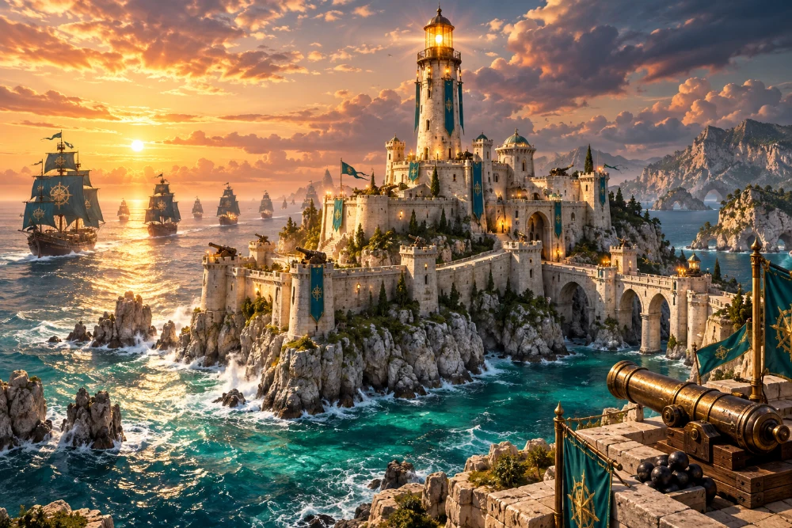

ТАКТИКА · ЗАЩИТА МАЯКА
Бастионприлива
Море наступает. Ваша крепость — последний рубеж.

ПОСТРОЙТЕ СВОЮ ОБОРОНУ♜
Хранитель маякаКампания на этом устройстве
★ 0 / 36ЛАЗУРНЫЙ БЕРЕГ · ОСТРОВ 1
Тихая гавань
8 волн · можно поставить на паузу и продолжить позже
Тихая гавань
МАЯК20 / 20
ЗОЛОТО290
ВОЛНА0 / 8
ОБОРОНА ПРИОСТАНОВЛЕНА
Маяк подождёт
Подготавливаем остров…
Подготовка обороны
Нажмите на площадку с «+» и выберите башню.